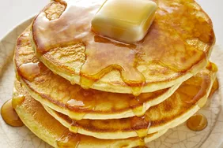

Pancakes

Good Old-Fashioned Pancakes
Perfect pancakes are easier to make than you think.
This pancake recipe produces thick, fluffy, and all-around delicious pancakes with just a few ingredients that are probably already in your kitchen
(and it's so much better than the boxed stuff).
Ingredients
- flour
- baking powder
- sugar
- salt
- milk and butter
- eggs
Steps
- Sift the dry ingredients together.
- Make a well, then add the wet ingredients. Stir to combine.
- Scoop the batter onto a hot griddle or pan.